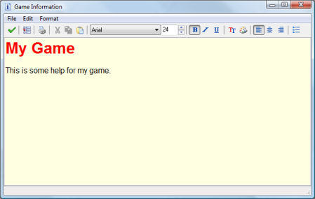

To create the simple game information, double click Game Information in the resource tree at the left of the screen. A little built-in editor is opened where you can edit the game information. You can use different fonts, different colors, and styles. Also you can set the background color.

In the File menu you can also set a number of Options. Default the help is shown in the game window and game play is temporarily halted. Here you can indicate to show the help file in a separate window. In this case you can indicate the caption of the game information during the game. Also you can indicate the position (use -1 for centered) and size of the game information window and whether it should have a border and be sizeable by the player. You can force the information window to stay on top and you can indicate whether the game should continue playing while the information is shown.
Good advice is to make the information short but precise. Of course you should add your name because you created the game. All example games provided have an information file about the game and how it was created. You might want to indicate at the bottom of the help file that the user must press Escape to continue playing.)
If you want to make a bit more fancy help, use a program like Word. Then select the part you want and use copy and paste to move it from Word to the game information editor. For more advanced games though you probably will not use this mechanism at all but use some dedicated rooms to show help about the game.